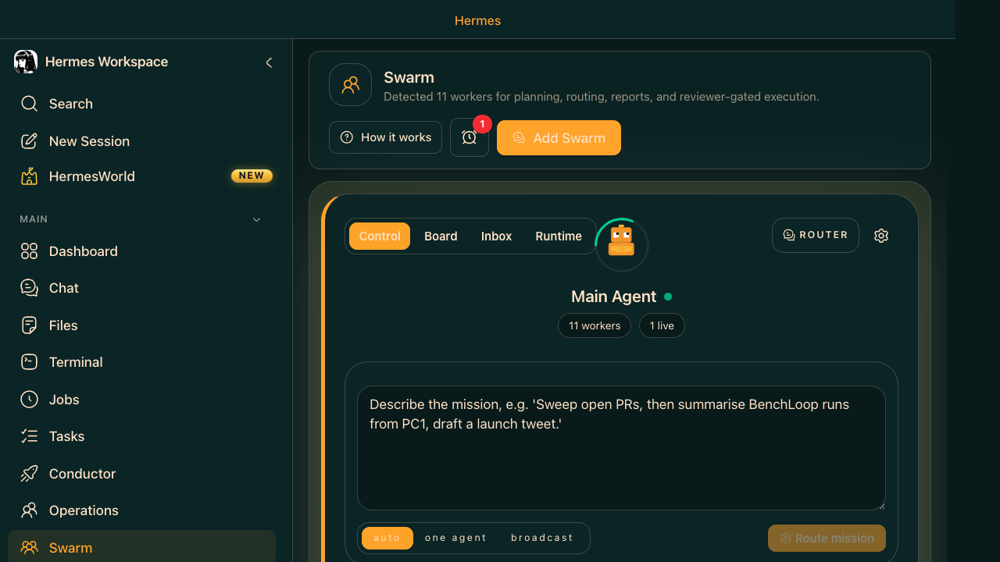

Swarm is Hermes on autopilot. You set up a pool of persistent tmux-backed workers, each with a role (builder, reviewer, docs, ops, triage). Feed them tasks via the Kanban board. They run through the night, checkpoint their work, and leave you results in the Inbox. No babysitting required.
🖥️ Hermes Workspace — Swarm page
Control tab — start/stop the swarm, configure worker count and roles
Board tab — Kanban view: tasks assigned to swarm workers
Inbox tab — completed work, blockers, and handoffs waiting for human review
Runtime tab — live view of tmux worker processes and logs
Reports tab — checkpoint summaries and proof-bearing work records

Hermes Workspace · Swarm Mode · Control / Board / Inbox / Runtime / Reports tabs. Robot avatar at center.
Worker Roles
🔨 builder
Writes and edits code. Full terminal + file access. Takes Ready tasks to Running.
🔍 reviewer
Reviews completed work, runs tests, requests changes or approves.
📝 docs
Writes documentation, READMEs, and changelogs from completed work.
🔬 research
Web searches, reads docs, summarizes findings for other workers to use.
⚙️ ops
Infrastructure tasks: deployments, config, health checks, CI pipelines.
🗂️ triage
Decomposes and specifies incoming Triage tasks before they reach builders.
Use Case — Overnight Autonomous Sprint
Goal: Process 15 backlog tasks while you sleep. Wake up to: code written, tests passing, docs updated, blockers flagged in Inbox.
Learning / Building Path Swarm is the final step: Start with the board, then a single Conductor mission, then manual multi-agent Operations, and only then graduate to Swarm. Swarm is the background-worker mode for running many tasks with persistent workers while you sleep or while the board is draining.
Beginner combo: 2 workers on 3 small tasks. Intermediate: 3–4 workers with a moderate board backlog. Advanced: overnight runs, long-form reviews, and tighter human approval/inbox guardrails.
Live Setup — Step by Step
Ensure hermes gateway run is running (Swarm uses the gateway backend)
Populate the Kanban board with tasks (Tasks page or hermes kanban create)
Open Hermes Workspace → navigate to Swarm
Go to Control tab — configure worker count (start with 2–3) and role assignments
Click Start Swarm — workers initialize as tmux sessions in the background
Switch to Board tab — watch tasks move from Ready → Running as workers pick them up
Check Runtime tab to see live worker logs (attach to any tmux session if needed)
When tasks complete: they move to Review. Check the Inbox tab for results and blockers
Review completed work, approve or request changes, mark Done
Just Show Me — Launch a Swarm
Seed the board, then launch swarm from Workspace Chat:
You — seed the board first
Do this
Seed the board, then launch swarm from Workspace Chat.
Paste into chat
Add these tasks to the kanban board for swarm processing:
- Fix the pagination bug in the sprint report (Priority: High)
- Add error handling to the Confluence publish function (Priority: High)
- Write tests for the date range filter (Priority: Medium)
- Update the README with new CLI flags (Priority: Low)
Move them all to Ready status so the swarm can pick them up.
Expected Result: The board is populated with the requested tasks and then swarm starts workers that process the Ready tasks while the Board/Runtime views show progress.
You — start the swarm
Do this
Start the swarm once the board is ready.
Paste into chat
Start swarm mode with 3 workers: 2 builders and 1 reviewer. Run through all Ready tasks on the board. Checkpoint after each task completion. Flag anything that needs human input in the Inbox.
Expected Result: The swarm run creates multiple worker sessions and the Inbox or Review state shows task completions, blockers, or human review requests.
You — full overnight sprint config
Do this
Launch an advanced swarm run with a reviewer and docs worker, then let the board drain overnight.
Paste into chat
Configure and launch an overnight swarm:
Workers: 4 total
- 2 builders (handle code tasks)
- 1 reviewer (reviews builder output, runs tests, requests changes if failing)
- 1 docs (writes documentation for completed features)
Constraints:
- Never edit config.py or requirements.txt without flagging for human review
- If a task takes more than 30 minutes, checkpoint and continue (don't give up)
- Any test failures: attempt a fix once, then flag in Inbox if still failing
- After all tasks complete: write a sprint summary to reports/overnight-summary.md
Board: process all Ready tasks. When done, check Triage for any newly added tasks.
Expected Result: The overnight swarm configuration creates a four-worker topology and writes the sprint summary to the requested report file after the run completes.
⚡Start small: First Swarm run: 2 workers, 3 tasks. Verify the workflow end-to-end before scaling to overnight sprints.
⚡git commit before: Swarm workers make real edits. A clean commit = safe rollback. Use git stash for emergency recovery.
⚡Inbox is your morning briefing: Check the Inbox tab first thing. Blocked tasks and human-needed decisions land there — everything else was handled autonomously.
⚡Swarm vs Conductor vs Operations: Swarm = persistent background workers draining a board autonomously. Conductor = one-shot mission with agent team. Operations = manual multi-agent management.